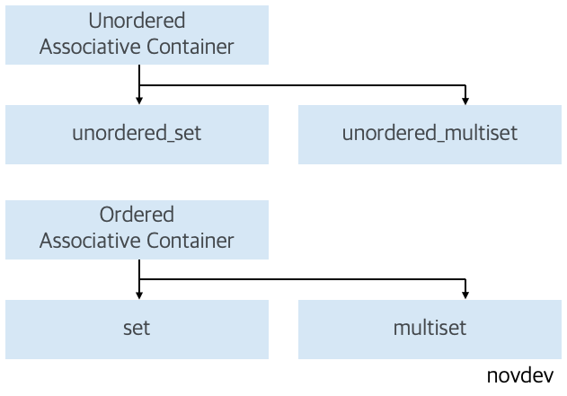
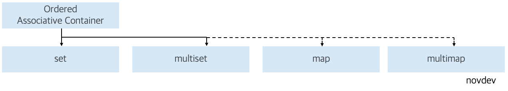

<meta charset="utf-8">
<html lang="ko">
<head>
    <link rel="stylesheet" type="text/css" href="./../style.css" />
    <title>[C++] About STL Set Container in PS Algorithm</title>
</head>
<body id="tt-body-page" class="">
<div id="wrap" class="wrap-right">
    <div id="container">
        <main class="main ">
            <div class="area-main">
                <div class="area-view">
                    <div class="article-header">
                        <div class="inner-article-header">
                            <div class="box-meta">
                                <h2 class="title-article">[C++] About STL Set Container in PS Algorithm</h2>
                                <div class="box-info">
                                    <p class="category">Problem Solving/PS With C++</p>
                                    <p class="date">2024-09-17 17:12:41</p>
                                </div>
                            </div>
                        </div>
                    </div>
                    <hr>
                    <div class="article-view">
                        <div class="contents_style">
                            <p style="text-align: center;" data-ke-size="size16"><span style="font-family: 'Nanum Gothic'; color: #000000;">* PS 알고리즘 풀이에서 사용되는 STL Set Container 사용법에 관하여 간략하게 정리해 둔 포스팅 입니다.&nbsp;</span></p>
<p style="text-align: center;" data-ke-size="size16"><span style="font-family: 'Nanum Gothic'; color: #000000;">*잘못된 내용을 포함하고 있을 수 있으며, 수정할 내용이 있다면 댓글로 남겨주세요</span></p>
<hr contenteditable="false" data-ke-type="horizontalRule" data-ke-style="style5" />
<h2 style="text-align: left;" data-ke-size="size26"><span style="font-family: 'Nanum Gothic'; color: #000000;">#1 About STL Set&nbsp;</span></h2>
<p style="text-align: left;" data-ke-size="size16"><span style="font-family: 'Nanum Gothic'; color: #000000;">- Set은 수학의 집합 개념을 본따서 설계된 자료구조 이기에 중복을 허용하지 않으며, 다양한 집합 관련 연산 (교집합 _ set_intersection , 합집합 set_union , 차집합 set_difference) 을 제공한다.</span></p>
<p style="text-align: left;" data-ke-size="size16">&nbsp;</p>
<p style="text-align: left;" data-ke-size="size16"><span style="font-family: 'Nanum Gothic'; color: #000000;">- <span style="background-color: #333333; color: #dddddd;">STL Associative Container [연관 컨테이너]</span> 에 속하는 <b>set, multiset</b>과 <span style="background-color: #333333; color: #dddddd;">STL Unordered Associative Container [비정렬 연관 컨테이너]</span> 에 속하는 <b>unordered_set , unordered_multiset</b> 으로 구분한다.&nbsp;</span></p>
<p style="text-align: left;" data-ke-size="size16">&nbsp;</p>
<p style="text-align: left;" data-ke-size="size18"><b><span style="font-family: 'Nanum Gothic'; color: #000000;">set &amp; multiset</span></b></p>
<p style="text-align: left;" data-ke-size="size16"><span style="font-family: 'Nanum Gothic';"><span style="color: #dddddd;"><span style="color: #000000;">1.</span> </span></span><span style="font-family: 'Nanum Gothic'; color: #000000;">원소를 <span style="background-color: #c0d1e7;">자동으로 정렬</span>된 상태로 유지한다.</span></p>
<p style="text-align: left;" data-ke-size="size16"><span style="font-family: 'Nanum Gothic'; color: #000000;">2. <span style="background-color: #c0d1e7;">이진 탐색 트리 (BST) 구조</span>로 설계되어 있다.</span></p>
<p style="text-align: left;" data-ke-size="size16"><span style="font-family: 'Nanum Gothic'; color: #000000;">3. 요소의 삽입, 삭제, 검색 연산이 <span style="background-color: #c0d1e7;">O(LogN)</span> 만큼의 시간 복잡도를 가진다.</span></p>
<p style="text-align: left;" data-ke-size="size16"><span style="font-family: 'Nanum Gothic'; color: #000000;">4. multiset은 원소의 중복을 허용한다.</span></p>
<p style="text-align: left;" data-ke-size="size16">&nbsp;</p>
<p style="text-align: left;" data-ke-size="size18"><span style="font-family: 'Nanum Gothic'; color: #000000;"><b>unordered_set &amp; unordered_multiset</b></span></p>
<p style="text-align: left;" data-ke-size="size16"><span style="font-family: 'Nanum Gothic';"><span style="color: #dddddd;"><span style="color: #000000;">1.</span> </span></span><span style="font-family: 'Nanum Gothic'; color: #000000;">원소가 <span style="background-color: #c0d1e7;">정렬되어 있지 않다.</span></span></p>
<p style="text-align: left;" data-ke-size="size16"><span style="font-family: 'Nanum Gothic'; color: #000000;">2. <span style="background-color: #c0d1e7;">Hash Table 기반</span>으로 구현되어 있다.</span></p>
<p style="text-align: left;" data-ke-size="size16"><span style="font-family: 'Nanum Gothic'; color: #000000;">3. 요소의 삽입, 삭제, 검색 연산이 <span style="background-color: #c0d1e7;">O(1)</span> 만큼의 시간 복잡도를 가지지만 최악의 경우 (해시 충돌이 발생하는 상황에서) O(N) 만큼 성능이 저하될 수 있다.</span></p>
<p style="text-align: left;" data-ke-size="size16"><span style="font-family: 'Nanum Gothic'; color: #000000;">4. unordered_multiset은 원소의 중복을 허용한다.</span></p>
<p style="text-align: left;" data-ke-size="size16">&nbsp;</p>
<p style="text-align: left;" data-ke-size="size16"><span style="font-family: 'Nanum Gothic'; color: #000000;"><a href="https://novlog.tistory.com/264" target="_blank" rel="noopener&nbsp;noreferrer">https://novlog.tistory.com/264</a></span></p>
<figure id="og_1726486912437" contenteditable="false" data-ke-type="opengraph" data-ke-align="alignCenter" data-og-type="article" data-og-title="[DataStructure] Hash 자료구조 개념 정리" data-og-description="* 다음 포스팅은 Hash 자료구조의 개념에 대한 내용을 포함하고 있습니다. 실질적인 구현 및 C++ STL map의 사용 방법에 대한 정보를 원하시는 분은 다음 포스팅을 참고해 주세요. * 개인적인 공부 내" data-og-host="novlog.tistory.com" data-og-source-url="https://novlog.tistory.com/264" data-og-url="https://novlog.tistory.com/entry/DataStructure-Hash-%EC%9E%90%EB%A3%8C%EA%B5%AC%EC%A1%B0-%EA%B0%9C%EB%85%90-%EC%A0%95%EB%A6%AC" data-og-image="https://scrap.kakaocdn.net/dn/gn6Yg/hyW2Q0rMBI/XQRcK7EoK2SiHnyMhkzoZ1/img.png?width=154&amp;height=153&amp;face=0_0_154_153,https://scrap.kakaocdn.net/dn/sJ8Qo/hyW2YRJR7d/Inkd4ek1rsuVEQsCSndoJK/img.png?width=154&amp;height=153&amp;face=0_0_154_153,https://scrap.kakaocdn.net/dn/2zGyw/hyW2R59cv6/f1JdUWIdoQ1hWH5KL28smk/img.jpg?width=563&amp;height=778&amp;face=0_0_563_778"><a href="https://novlog.tistory.com/264" target="_blank" rel="noopener" data-source-url="https://novlog.tistory.com/264">
<div class="og-image" style="background-image: url('https://scrap.kakaocdn.net/dn/gn6Yg/hyW2Q0rMBI/XQRcK7EoK2SiHnyMhkzoZ1/img.png?width=154&amp;height=153&amp;face=0_0_154_153,https://scrap.kakaocdn.net/dn/sJ8Qo/hyW2YRJR7d/Inkd4ek1rsuVEQsCSndoJK/img.png?width=154&amp;height=153&amp;face=0_0_154_153,https://scrap.kakaocdn.net/dn/2zGyw/hyW2R59cv6/f1JdUWIdoQ1hWH5KL28smk/img.jpg?width=563&amp;height=778&amp;face=0_0_563_778');">&nbsp;</div>
<div class="og-text">
<p class="og-title" data-ke-size="size16">[DataStructure] Hash 자료구조 개념 정리</p>
<p class="og-desc" data-ke-size="size16">* 다음 포스팅은 Hash 자료구조의 개념에 대한 내용을 포함하고 있습니다. 실질적인 구현 및 C++ STL map의 사용 방법에 대한 정보를 원하시는 분은 다음 포스팅을 참고해 주세요. * 개인적인 공부 내</p>
<p class="og-host" data-ke-size="size16">novlog.tistory.com</p>
</div>
</a></figure>
<p data-ke-size="size16">&nbsp;</p>
<p style="text-align: left;" data-ke-size="size16"><span style="font-family: 'Nanum Gothic'; color: #000000;">따라서 어떠한 컨테이너에 속한 set을 선택하는 지에 따라서 연산에 소모되는 시간 복잡도가 달라지기에, 문제 풀이 상황에 걸맞는 Set Contaienr를 선택해야 한다.&nbsp;</span></p>
<p><figure class="imageblock alignLeft" width="552" height="386" >
    <span data-lightbox="lightbox">
        
    </span>
    <figcaption></figcaption>
</figure></p>
<table style="border-collapse: collapse; width: 100.698%; height: 87px;" border="1" data-ke-align="alignLeft">
<tbody>
<tr style="height: 19px;">
<td style="width: 25.4811%; text-align: center; height: 19px;"><b>Category</b></td>
<td style="width: 24.8714%; text-align: center; height: 19px;"><b>Container</b></td>
<td style="width: 20.6979%; text-align: center; height: 19px;"><b>원소 중복</b></td>
<td style="width: 15.9973%; text-align: center; height: 19px;"><b>원소 정렬 상태</b></td>
<td style="width: 13.65%; text-align: center; height: 19px;"><b>시간 복잡도</b></td>
</tr>
<tr style="height: 17px;">
<td style="width: 25.4811%; text-align: center; height: 34px;" rowspan="2">Associative Container</td>
<td style="width: 24.8714%; text-align: center; height: 17px;">set</td>
<td style="width: 20.6979%; text-align: center; height: 17px;">x</td>
<td style="width: 15.9973%; text-align: center; height: 17px;">o</td>
<td style="width: 13.65%; text-align: center; height: 17px;">O(LogN)</td>
</tr>
<tr style="height: 17px;">
<td style="width: 24.8714%; text-align: center; height: 17px;">multiset</td>
<td style="width: 20.6979%; text-align: center; height: 17px;">o</td>
<td style="width: 15.9973%; text-align: center; height: 17px;">o</td>
<td style="width: 13.65%; text-align: center; height: 17px;">O(LogN)</td>
</tr>
<tr style="height: 17px;">
<td style="width: 25.4811%; text-align: center; height: 34px;" rowspan="2">Unordered<br />Associative Container</td>
<td style="width: 24.8714%; text-align: center; height: 17px;">unordered_set</td>
<td style="width: 20.6979%; text-align: center; height: 17px;">x</td>
<td style="width: 15.9973%; text-align: center; height: 17px;">x</td>
<td style="width: 13.65%; text-align: center; height: 17px;">O(1)</td>
</tr>
<tr style="height: 17px;">
<td style="width: 24.8714%; text-align: center; height: 17px;">unordered_multiset</td>
<td style="width: 20.6979%; text-align: center; height: 17px;">o</td>
<td style="width: 15.9973%; text-align: center; height: 17px;">x</td>
<td style="width: 13.65%; text-align: center; height: 17px;">O(1)</td>
</tr>
</tbody>
</table>
<p data-ke-size="size16">&nbsp;</p>
<p data-ke-size="size16"><span style="font-family: 'Nanum Gothic'; color: #000000;">* 참고로 Associative Container는 set, mulitset을 제외하고 2가지 컨테이너 (map, multimap) 를 추가로 제공한다.&nbsp;</span></p>
<p data-ke-size="size16"><span style="font-family: 'Nanum Gothic'; color: #000000;">Associative Container는 동일한 인터페이스 (생성자, 멤버함수, 연산자) 를 제공하기에 한 가지 컨테이너의 사용 방법만 숙달하면 나머지 컨테이너는 별도의 러닝커브 없이 사용 가능하다.&nbsp;&nbsp;</span></p>
<p><figure class="imageblock alignLeft" >
    <span data-lightbox="lightbox">
        
    </span>
    <figcaption></figcaption>
</figure></p>
<hr contenteditable="false" data-ke-type="horizontalRule" data-ke-style="style5" />
<h2 style="text-align: left;" data-ke-size="size26"><span style="font-family: 'Nanum Gothic'; color: #000000;">#2 Set Usage</span></h2>
<p data-ke-size="size16"><span style="font-family: 'Nanum Gothic'; color: #000000;">* 알고리즘 문제 풀이에 필요한 정말 최소한의 사용방법만 다루었습니다.&nbsp;</span></p>
<p data-ke-size="size16"><span style="font-family: 'Nanum Gothic'; color: #000000;">* Set Container의 자세한 내용은 공식 문서를 참고해 주세요.</span></p>
<p data-ke-size="size16"><span style="font-family: 'Nanum Gothic'; color: #000000;">* 다음 예제는 <span style="background-color: #333333; color: #dddddd;">set 자료구조를 기반으로 작성</span>되었으며, multiset, unordered_set, unordered_multiset의 경우 각 특성에 따라 출력 결과가 달라집니다. <span style="background-color: #333333; color: #dddddd;">(중복 제거, 자동 정렬)</span></span></p>
<p data-ke-size="size16"><span style="font-family: 'Nanum Gothic'; color: #000000;"><a href="https://cplusplus.com/reference/set/" target="_blank" rel="noopener&nbsp;noreferrer">https://cplusplus.com/reference/set/</a></span></p>
<p data-ke-size="size16">&nbsp;</p>
<p data-ke-size="size18"><b><span style="font-family: 'Nanum Gothic'; color: #000000;">2.1 Declare Set</span></b></p>
<p data-ke-size="size16"><span style="font-family: 'Nanum Gothic'; color: #000000;">#include &lt;set&gt; 헤더파일을 추가한다.</span></p>
<p data-ke-size="size16"><span style="font-family: 'Nanum Gothic'; color: #000000;">using namespace std; 네임스페이스를 선언한다.</span></p>
<p data-ke-size="size16"><span style="font-family: 'Nanum Gothic'; color: #000000;"><span style="background-color: #333333; color: #dddddd;">set&lt;DataType&gt; setName;</span> 형태로 선언한다.</span></p>
<pre id="code_1726555892330" class="cpp" data-ke-language="cpp" data-ke-type="codeblock"><code>    set&lt;int&gt; intSetV1; // 1. int type set 선언
    set&lt;int&gt; intSetV2 = {1, 2, 3, 4, 5}; // 2. 선언과 동시에 초기화
    set&lt;string&gt; stringSetV1; // 3. string type set 선언
    set&lt;string&gt; stringSetV2 = {"nov", "dev"}; //4. 선언과 동시에 초기화</code></pre>
<p data-ke-size="size16">&nbsp;</p>
<p data-ke-size="size18"><b><span style="font-family: 'Nanum Gothic'; color: #000000;">2.2 Insert</span></b></p>
<p data-ke-size="size16"><span style="font-family: 'Nanum Gothic'; color: #dddddd; background-color: #333333;">setName.insert(value);</span></p>
<p data-ke-size="size16"><span style="font-family: 'Nanum Gothic'; color: #000000;">set에 value를 추가한다.</span></p>
<pre id="code_1726556414720" class="cpp" data-ke-language="cpp" data-ke-type="codeblock"><code>    
    set&lt;int&gt; ordered_set;
    ordered_set.insert(10);
    ordered_set.insert(30);
    ordered_set.insert(20);
    ordered_set.insert(20); // 중복 원소 제거

    for (set&lt;int&gt;::iterator it = ordered_set.begin(); it != ordered_set.end(); it++) {
        cout &lt;&lt; *it &lt;&lt; " ";
    }</code></pre>
<pre id="code_1726556606527" class="cpp" data-ke-language="cpp" data-ke-type="codeblock"><code>[Output} 10 20 30</code></pre>
<p data-ke-size="size16">&nbsp;</p>
<p data-ke-size="size18"><b><span style="font-family: 'Nanum Gothic'; color: #000000;">2.3 Delete</span></b></p>
<p data-ke-size="size16"><span style="font-family: 'Nanum Gothic'; color: #dddddd; background-color: #333333;">setName.delete(value);</span></p>
<p data-ke-size="size16"><span style="font-family: 'Nanum Gothic'; color: #000000;">set에서 value를 제거한다.</span></p>
<pre id="code_1726556651432" class="cpp" data-ke-language="cpp" data-ke-type="codeblock"><code>    set&lt;int&gt; ordered_set = {10, 20, 30}
    ordered_set.erase(30); // 원소 30 제거

    for (set&lt;int&gt;::iterator it = ordered_set.begin(); it != ordered_set.end(); it++) {
        cout &lt;&lt; *it &lt;&lt; " ";
    }</code></pre>
<pre id="code_1726556699940" class="cpp" data-ke-language="cpp" data-ke-type="codeblock"><code>[Output] 10 20</code></pre>
<p data-ke-size="size16">&nbsp;</p>
<p data-ke-size="size18"><b><span style="font-family: 'Nanum Gothic'; color: #000000;">2.4 Find</span></b></p>
<p data-ke-size="size16"><span style="font-family: 'Nanum Gothic'; color: #dddddd; background-color: #333333;">setName.find(value);</span></p>
<p data-ke-size="size16"><span style="font-family: 'Nanum Gothic'; color: #000000;">set에서 value를 탐색한다.</span></p>
<p data-ke-size="size16"><span style="font-family: 'Nanum Gothic'; color: #000000;"><b>원소가 존재하는 경우 해당 원소의 Iterator를 반환</b>한다.</span></p>
<p data-ke-size="size16"><span style="font-family: 'Nanum Gothic'; color: #000000;"><b>원소가 존재하지 않는 경우 setName.end()를 반환</b>한다.</span></p>
<pre id="code_1726556937471" class="cpp" data-ke-language="cpp" data-ke-type="codeblock"><code>    set&lt;int&gt; ordered_set = {10, 20};

    // ordered_set.end()를 반환하지 않는 경우,
    // 즉 원소가 존재하는 경우
    if (ordered_set.find(20) != ordered_set.end()) {
        cout &lt;&lt; "set 내부에 20이 존재합니다." &lt;&lt; endl;
    }</code></pre>
<pre id="code_1726557051273" class="cpp" data-ke-language="cpp" data-ke-type="codeblock"><code>[output] set 내부에 20이 존재합니다.</code></pre>
<p data-ke-size="size16">&nbsp;</p>
<p data-ke-size="size18"><b><span style="font-family: 'Nanum Gothic'; color: #000000;">2.5 순회<br /><br /></span></b><b><span style="font-family: 'Nanum Gothic'; color: #000000;"></span></b></p>
<p data-ke-size="size16"><span style="font-family: 'Nanum Gothic'; color: #000000; background-color: #c0d1e7;">1. iterator를 사용한 순회</span></p>
<pre id="code_1726560318100" class="cpp" data-ke-language="cpp" data-ke-type="codeblock"><code>    set&lt;int&gt; ordered_set = {10, 20, 30};

    // 1. iterator를 사용한 순회
    for (set&lt;int&gt;::iterator it = ordered_set.begin(); it != ordered_set.end(); it++) {
        cout &lt;&lt; *it &lt;&lt; " ";
    }</code></pre>
<p data-ke-size="size16">&nbsp;</p>
<p data-ke-size="size16"><span style="font-family: 'Nanum Gothic'; color: #000000; background-color: #c0d1e7;">2. auto keyword를 사용한 축약</span></p>
<pre id="code_1726560407430" class="cpp" data-ke-language="cpp" data-ke-type="codeblock"><code>    set&lt;int&gt; ordered_set = {10, 20, 30};

    // 2. auto keyword 를 사용한 축약
    for (auto it = ordered_set.begin(); it != ordered_set.end(); it++) {
        cout &lt;&lt; *it &lt;&lt; " ";
    }</code></pre>
<p data-ke-size="size16">&nbsp;</p>
<p data-ke-size="size16"><span style="font-family: 'Nanum Gothic'; color: #000000; background-color: #c0d1e7;">3. C++11 Range-Based-For</span></p>
<pre id="code_1726560579913" class="cpp" data-ke-language="cpp" data-ke-type="codeblock"><code>    set&lt;int&gt; ordered_set = {10, 20, 30};

    // 3. C++11 Range-Based-For
    for (const auto&amp; element : ordered_set) {
        cout &lt;&lt; element &lt;&lt; " ";
    }</code></pre>
<hr contenteditable="false" data-ke-type="horizontalRule" data-ke-style="style5" />
<h2 data-ke-size="size26"><span style="font-family: 'Nanum Gothic';">#참고문헌</span></h2>
<p data-ke-size="size16"><span style="font-family: 'Nanum Gothic';"><a href="https://cplusplus.com/reference/set/" target="_blank" rel="noopener&nbsp;noreferrer">https://cplusplus.com/reference/set/</a></span></p>
                        </div>
                        <br/>
                        <div class="tags">
                            
                        </div>
                    </div>
                </div>
            </div>
        </main>
    </div>
</div>
</body>
</html>
